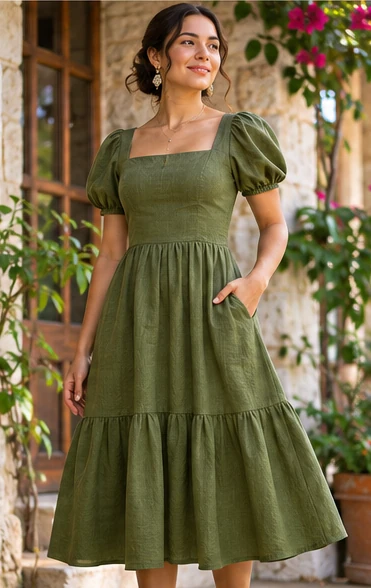

Diseña tu prenda
Combina una prenda, una tela y tu color favorito. Mira el resultado al instante.

El tejido exacto se indica en la muestra fotográfica.
Lino
Natural, fresco y elegante.
- Composición:
- Por confirmar
- Ancho:
- Por confirmar
- Textura:
- Fibra visible
- Uso recomendado:
- Vestidos
- Prenda:
- Vestido largo
- Tela:
- Lino
- Color:
- Verde salvia
- Talla:
- M
- Cantidad:
- 1
✓ Material recomendado para esta prenda
El color de la prenda se simula digitalmente sobre una fotografía fija. La textura real de la tela no se puede garantizar con esta vista. Las imágenes son referencias conceptuales. La tela y color de la muestra son los seleccionados; una fotografía de modelo no representa todas las combinaciones disponibles. Precio, composición, existencias y confección sujetos a confirmación.
Catálogo de telas
Explora texturas reales en imágenes independientes para cada material y color.
Colores y telas de demostración. Sustituir o validar con el inventario real del negocio antes de ofrecer disponibilidad.
La inspiración toma forma
Escoge una combinación, revisa su muestra y solicita una cotización sin compromiso.
Diseñar mi prenda ↗